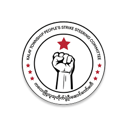

"We, Women Revolt."

About us
Women Alliance Burma (WAB) was officially founded on 6 September 2021 by young women from different regions of Myanmar who have actively participated in the Women Strike Movements during the Myanmar Spring Revolution (2021).
The alliance brings together women activists and young people who identify as women and who share a collective commitment to justice, equality, and freedom.
Through collective action, Women Alliance Burma works to strengthen women's participation in the revolutionary movement and to advocate for women's leadership and rights in building a future federal democratic union in Myanmar.
Vision
Women Alliance Burma envisions:
- To uproot and fight against the military dictatorship and all forms of autocracy, and to firmly and unitedly build a genuine, new Federal Democratic Union.
- To ensure that the active roles and movements of the women within the Women Alliance Burma are historically recorded in the history of the Myanmar Spring Revolution.
- To dismantle and fight against patriarchy and traditional conservative gender norms in Myanmar society alongside the fight against dictatorship.
- To advance the participation of women in Myanmar's political, economic, and social sectors; to achieve equal rights; and to ensure that the entire female population is united and can speak with a single voice for women's rights in sync with political shifts.
- To promote the participation and leadership roles of women in future federal democracy-building processes and reconstruction period initiatives.
Mission
Women Alliance Burma is composed of women leading various women's strike columns within the Spring Revolution. Our mission is to strengthen women's participation in ground-based strike battles and other revolutionary sectors to establish a genuine federal democratic system.
We collaborate with revolutionary forces, political groups, women's organizations, and both domestic and international entities that share our stance. To achieve gender equality and further enhance women's capacities, we engage in public awareness campaigns, mobilization, and providing necessary support, while actively advocating and pushing for action from relevant local and international organizations.
Our Partner Organization


